The game now runs in seven languages: English, Turkish, French, Spanish (Latin American), Brazilian Portuguese, Russian and Japanese. The foundation is in place: a language setting, one string table per language, plural and number rules, names drawn in each language, localized school and exam names, and a Japanese font. Only the Settings screen is fully translated so far. Every screenshot is a capture of the real screen code at 1080×2340 portrait, shown at half size, rendered from a fresh fixed-seed career with no player save involved.
Fully translated, as the pilot screen. One row in it, Rules, still reads in English, because that row shows the Manual's title, and the Manual has not been converted yet.
Event sentences, the Manual, the HUD and the other screens. This includes Turkish suffixes and Russian case endings around inserted names.
A long pseudo-language to find overflow, the fit tests run in each language, and a character budget for Japanese in the text rules.
No translation has been checked by a native speaker yet. Nine open questions are written down for that review. Examples: the Russian word for the supervisor, the Spanish register (usted or tú), the Turkish coin word, and whether any of the invented school names matches a famous real one.
The Settings screen is the one screen that is fully translated. The rows a player sees first: Sound, Display and help, then Career below the fold.
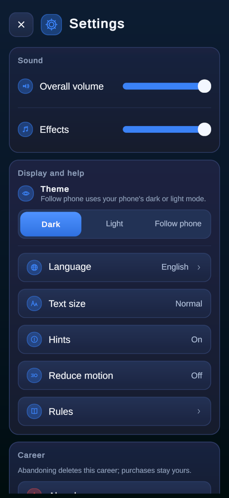
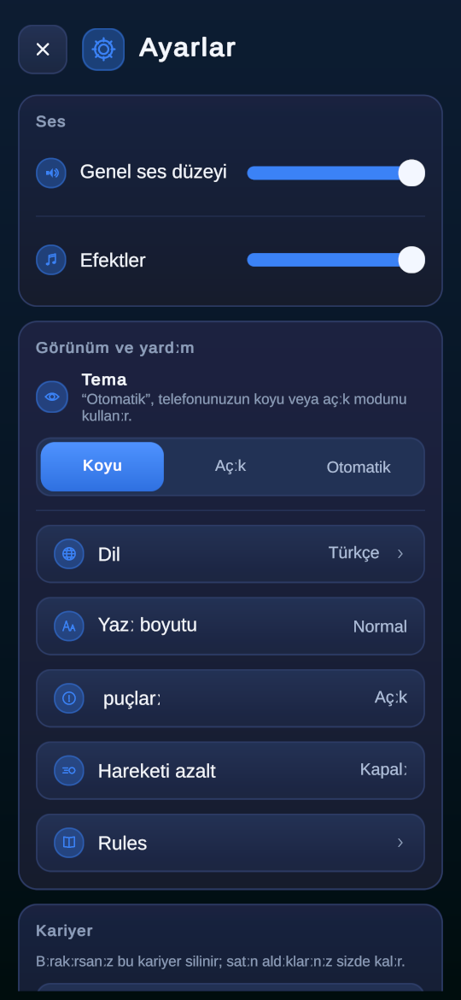
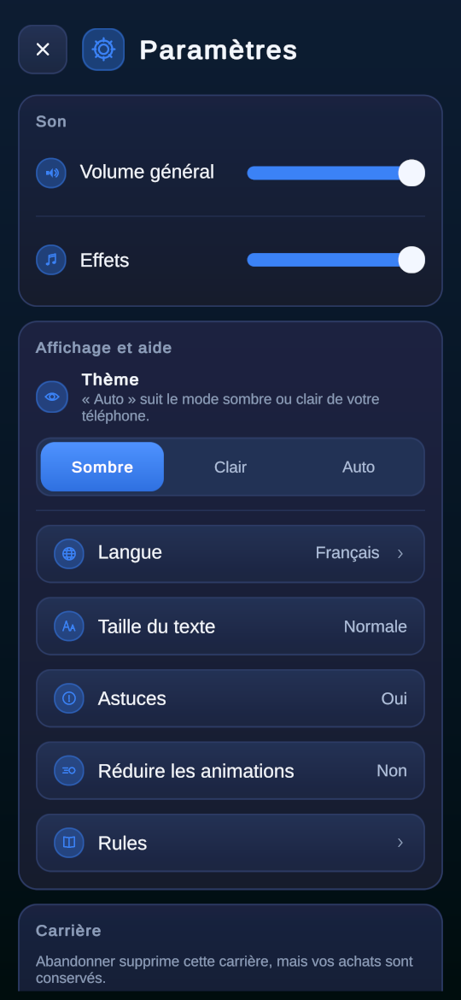
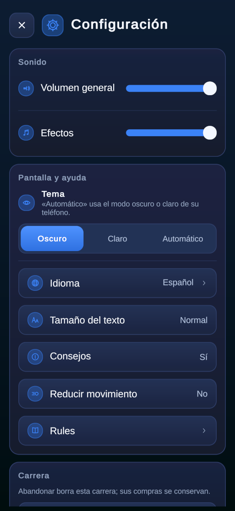
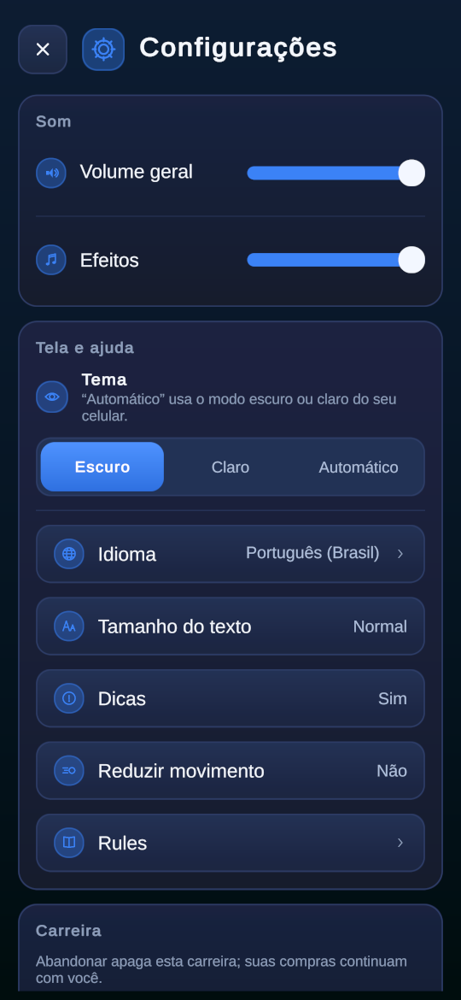
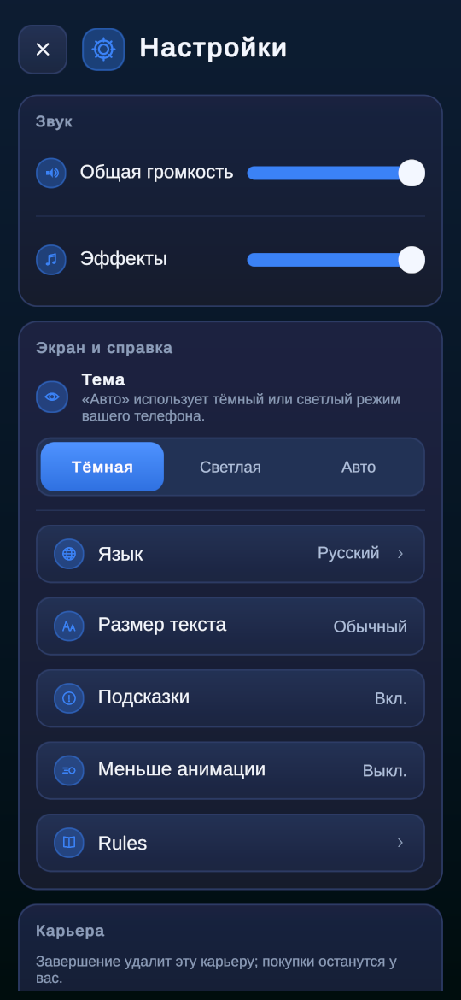
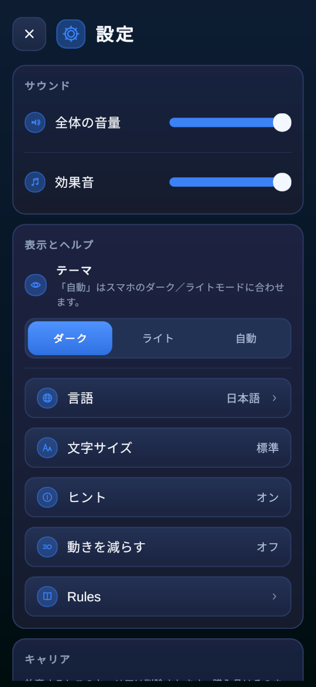
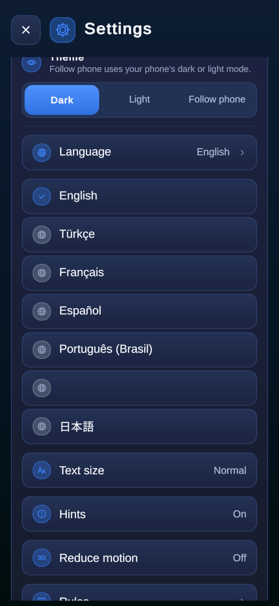
A career keeps the language it was started in, and its people's names are drawn from that language's pool. UI text follows Settings. Switching the language halfway through a career changes the screens, but never renames the students that career already knows.
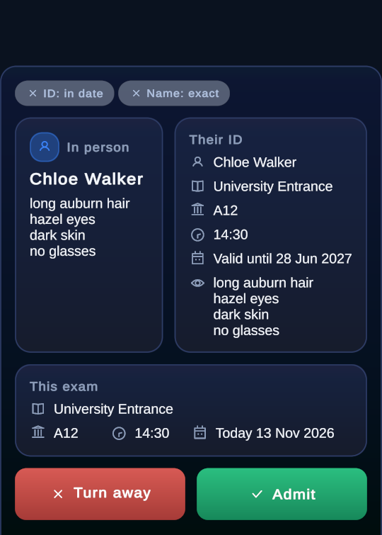
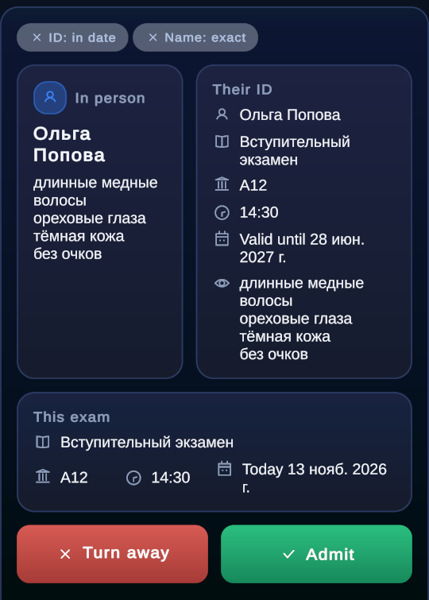
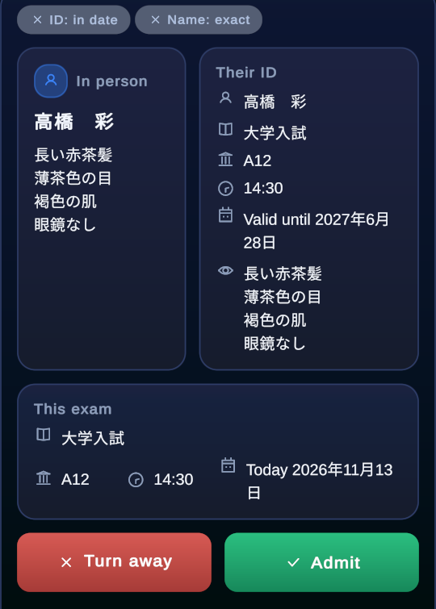
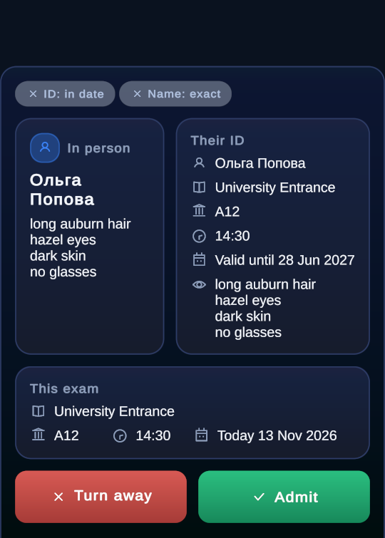
Four people from the same four seeds in each language, two women and two men. Each pool has 8 male given names, 8 female given names and 16 family names, so a seed draws the same position in every language. The near-miss column is the variant a fake ID would print instead.
| Language | Seed 1 · woman | Seed 18 · man | Seed 35 · woman | Seed 52 · man | Near-miss example |
|---|---|---|---|---|---|
| English | Sarah Smith | Ryan Clark | Chloe Walker | Nathan Hall | Smith → Smyth |
| Türkçe | Zeynep Kaya | Burak Demir | Selin Şahin | Onur Yıldız | Kaya → Kayan, Kayin, Kayil or Kayaoğlu |
| Français | Manon Martin | Hugo Dubois | Julie Petit | Julien Durand | Dubois → Dubos |
| Español | Sofía García | Andrés López | Camila Pérez | Raúl Gómez | Pérez → Páez |
| Português (Brasil) | Beatriz Silva | Pedro Santos | Isabela Souza | Bruno Oliveira | Souza → Sousa |
| Русский | Мария Иванова | Павел Смирнов | Ольга Попова | Максим Петров | Попова → Попкова |
| 日本語 | 佐藤 結衣 | 鈴木 和也 | 高橋 彩 | 田中 悠斗 | 高橋 → 古橋, 田中 → 田仲 |
Each school name is adapted to sound like a real school of that kind in that country. It keeps the motif drawn on the school's crest, shown in brackets. Names are drawn from the school's id, so the Career screen lists them in the UI language.
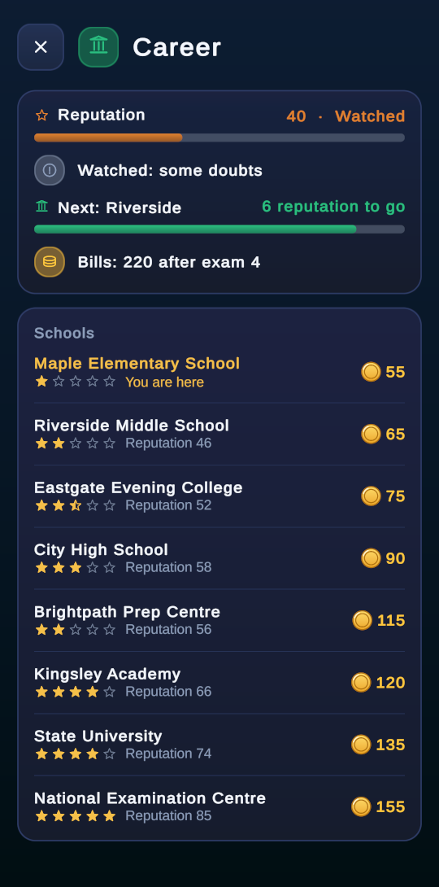
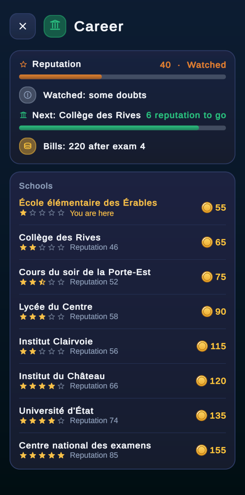
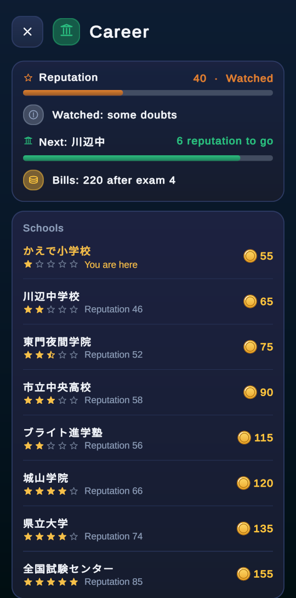
| English (crest) | tr | fr | es | pt-BR | ru | ja |
|---|---|---|---|---|---|---|
| Maple Elementary School (leaf) | Çınar İlkokulu | École élémentaire des Érables | Escuela Primaria Los Arces | Escola Municipal Ipê | Начальная школа «Клён» | かえで小学校 |
| Riverside Middle School (waves) | Dereboyu Ortaokulu | Collège des Rives | Escuela Secundaria La Ribera | Escola Estadual Beira-Rio | Школа «Заречье» | 川辺中学校 |
| Eastgate Evening College (gate) | Doğukapı Akşam Okulu | Cours du soir de la Porte-Est | Colegio Nocturno Puerta Oriente | Colégio Noturno Portal Leste | Вечерний колледж «Восточные ворота» | 東門夜間学院 |
| City High School (clock tower) | Kent Lisesi | Lycée du Centre | Colegio Central | Colégio Central | Городской лицей | 市立中央高校 |
| Brightpath Prep Centre (storefront) | Başarı Yolu Kurs Merkezi | Institut Clairvoie | Academia Buen Rumbo | Cursinho Rumo Certo | Учебный центр «Ориентир» | ブライト進学塾 |
| Kingsley Academy (castle) | Kale Koleji | Institut du Château | Colegio El Castillo | Colégio Castelo Real | Гимназия «Цитадель» | 城山学院 |
| State University (dome) | Devlet Üniversitesi | Université d'État | Universidad Estatal | Universidade Estadual | Государственный университет | 県立大学 |
| National Examination Centre (columns) | Ulusal Sınav Merkezi | Centre national des examens | Centro Nacional de Exámenes | Centro Nacional de Exames | Национальный экзаменационный центр | 全国試験センター |
| Exam | tr | fr | es | pt-BR | ru | ja |
|---|---|---|---|---|---|---|
| School Exam | Okul Sınavı | Examen scolaire | Examen escolar | Prova escolar | Школьный экзамен | 定期試験 |
| University Entrance | Üniversite Giriş Sınavı | Examen d'entrée à l'université | Examen de admisión | Vestibular | Вступительный экзамен | 大学入試 |
| Professional Certification | Sertifika Sınavı | Certification professionnelle | Certificación profesional | Certificação profissional | Квалификационный экзамен | 資格試験 |
| National Examination | Ulusal Sınav | Examen national | Examen nacional | Exame Nacional | Государственный экзамен | 全国統一試験 |
| Placement Test | Seviye Belirleme Sınavı | Test de niveau | Examen de ubicación | Prova de nivelamento | Распределительный тест | クラス分けテスト |
Every school also has a short name for tight places, such as 川辺中 above or «Клён» in Russian. The school names are invented, and the native-speaker review will check that none of them matches a well-known real one.
What the code prints for each language today. Dates are stored as month/day/year and always shown with the month written out, so 06/11 cannot be read the wrong way round.
| Language | Code | 1234 coins | 1234567 | 13 November 2026 | Note |
|---|---|---|---|---|---|
| English | en | 1,234 | 1,234,567 | 13 Nov 2026 | |
| Türkçe | tr | 1.234 | 1.234.567 | 13 Kas 2026 | Percent sign first: %50 |
| Français | fr | 1 234 | 1 234 567 | 13 nov. 2026 | Groups with a narrow no-break space (U+202F) |
| Español | es | 1,234 | 1,234,567 | 13 nov 2026 | Latin American: four-digit numbers group too |
| Português (Brasil) | pt-BR | 1.234 | 1.234.567 | 13 de nov. de 2026 | Plural: "0 moedas" |
| Русский | ru | 1 234 | 1 234 567 | 13 нояб. 2026 г. | No-break space; month in the genitive; one/few/many plurals |
| 日本語 | ja | 1,234 | 1,234,567 | 2026年11月13日 | Year, month, day |
English output is unchanged, except that the hints about being short of coins now group amounts of 1,000 or more. A number that must not be grouped, such as a year or a room number, is passed in as text.